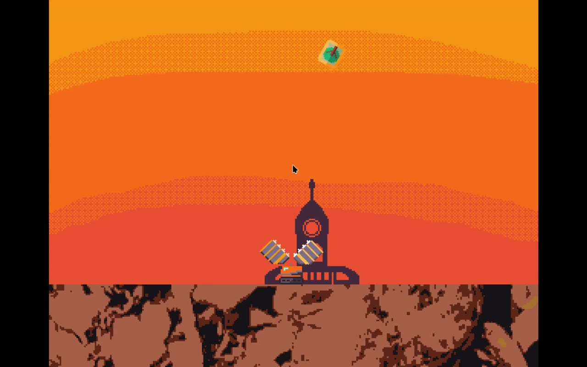

01 / Development
The jam & the idea
The game jam was part of the StopKillingGames (SKG) initiative. The games made for the competition had to have measures for players to continue playing them after the developer no longer works on the project.
The situation that SKG stands to change reminded me a lot of the dystopian futures described in literature and movies. So I thought I would place my character on a planet covered in trash and litter, with the goal being to uncover the lost cities.
02 / Development
Three days to make it
In this project I was even more time-limited than with ThawStroke. Not only was the competition itself much shorter, but I also joined halfway through. So I had to make a simplified version of my idea.
I also had some trouble fine-tuning the arm-shooting mechanism. I wanted to make it feel very satisfying for the player, and while I achieved it, it might have taken too much time from my three-day time limit.

03 / Development
Looking back
After finishing the game, I realised that I had really struggled with the time limit. I learned a lot about time management and prioritisation of certain gameplay elements.